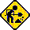

Welcome to RELICS, formerly TOGA (The Other Group of Amigoids)!
We meet the third Saturday of every month.
Our next meeting is on Saturday, April 19, at 1:30 PM, at the Dr. Roberto Cruz Alum Rock Branch Library in East San Jose. We will be in the large community room this time. Note that we are starting 30 minutes later than usual. This is our first "RELICSCon" meeting, with more space to set up computers!
You can register on our Meetup.
RELICS was founded in 1997 as TOGA. We're a group of vintage computer enthusiasts who love playing with old hardware. Come to a meeting and play some games, troubleshoot an Amiga (or something), and use retro computers from around the world!
Machines that have shown up in the past include: Amigas of all sorts, Atari ST/Falcon, Atari 8-bit, NEC PC-8801, Sharp X68000, MSX, Apple II, classic Macs, and plenty of Sinclair hardware (official and Soviet clones).
This site is currently under construction. Check back soon for more info on the club!
